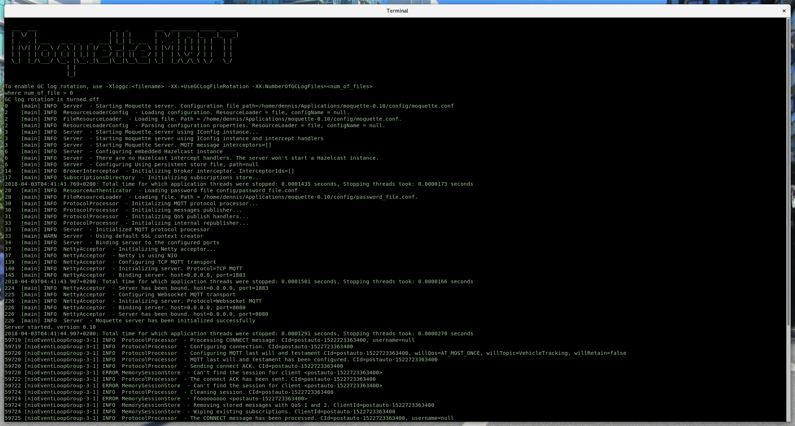
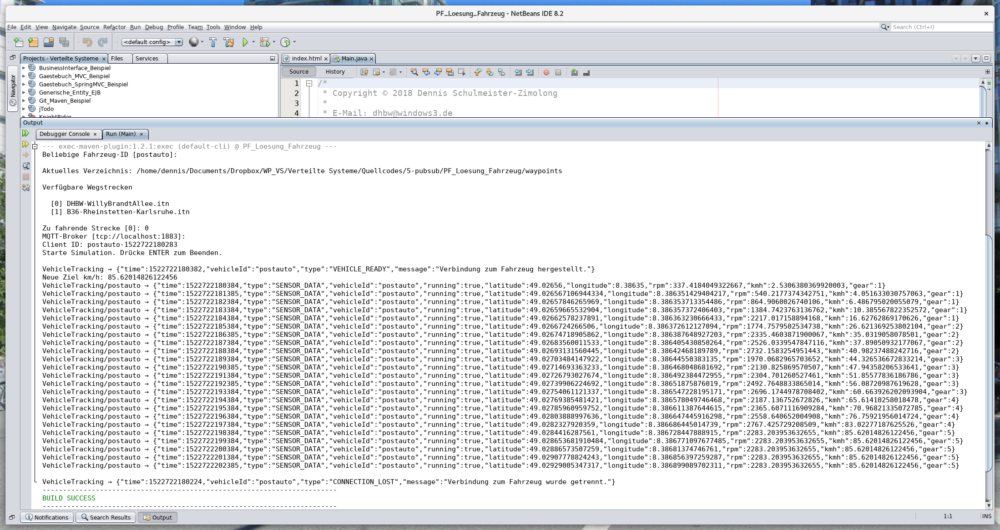
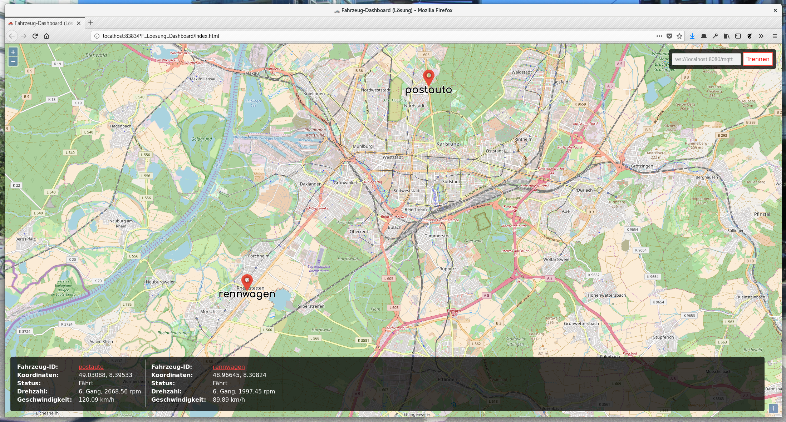

In der Vorlesung haben wir bereits gesehen, dass MQTT quasi das Standardprotokoll schlechthin für jegliche IoT-Anwendungsfälle ist (neben CoAP). 🤖 In dieser Aufgabe geht es daher darum, eine Fahrzeugflotte 🏎️ in Echtzeit zu überwachen und die gesammelten Daten in einer Weboberfläche darzustellen.
|  Der laufende MQTT-Server |  Ein simuliertes Fahrzeug |  Ja, wo fahren sie denn? |
Da wir uns für die Vorlesung leider keine echten Fahrzeuge leisten können, müssen wir hier ein wenig schummeln: Wir simulieren die Fahrzeuge einfach mit einem kleinen Javaprogramm. 💻 Dieses findet ihr auf Moodle und müsst es noch zu Ende programmieren. Das Programm besteht aus folgenden Klassen:
| Main | Hauptklasse des Programms |
| Vehicle | Die eigentliche Fahrzeugsimulation |
| WGS84 | Eine Koordinate auf dem Weg des Fahrzeugs |
| StatusMessage | Datentransferklasse für eine Statusnachricht |
| StatusType | Aufzählung der erlaubten Statusnachrichten |
| SensorMessage | Datentransferklasse für eine Nachricht mit Messwerten |
| Utils | Hilfreiche Konstanten und statische Methoden |
Ihr müsst lediglich noch die Klasse Main ausprogrammieren. Alle anderen Klassen sind bereits vollständig enthalten. Folgende Dinge fehlen hier noch:
Natürlich macht eine Anwendung wie diese nur Sinn, wenn die gesammelten Daten entweder aufgezeichnet oder wenigstens anschaulich dargestellt werden. Aus diesem Grund kommt die Anwendung mit einem fast fertigen webbasierten Dashboard, dass die aktuellen Fahrzeugdaten sowie die Position aller Fahrzeuge auf einer Karte zeigt. 🗺️ Um sie zu vervollständigen müsst ihr noch folgende Dinge tun:
Die ganzen Details zur Darstellung der Karte sind bereits fertig ausprogrammiert. Die Karte nutzt dabei OpenLayers für die Darstellung und die freien Kartendaten von OpenStreetMap für den Inhalt, falls ihr euch dafür interessiert.
byte[] json = sensorData.toJson();
String topic = Utils.MQTT_TOPIC_NAME + "/" + vehicleId;
System.out.println(topic + " → " + new String(json, StandardCharsets.UTF_8));